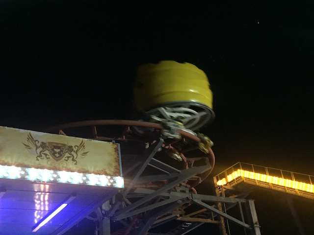
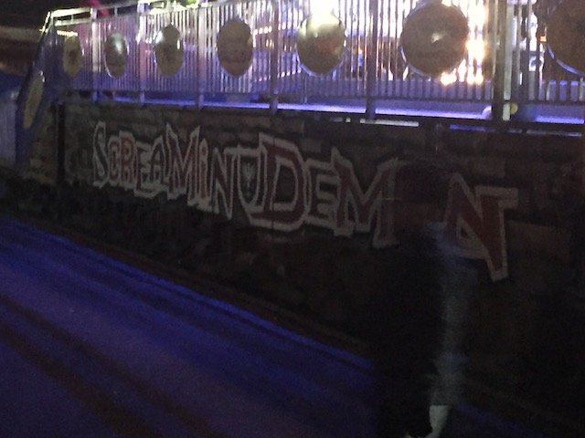
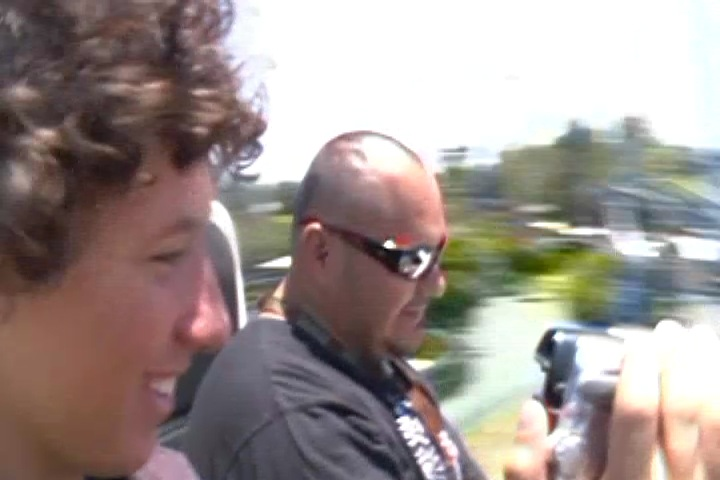

| |

Screamin Demon Review

For today's review, we're going back in time to when Castle Park actually had a coaster meant for adults. Pole Position...I mean Screamin Demon. Once you got in the seat, the ride operator pulled down your lap bar and away you went. You climbed up the first lifthill and then you went through a turn into the 2nd Part of the lifthill. It almost felt like you were a peep on RCT1 with the double lift hill. Anyways, after the 2nd part of the lifthill, you went through some straight track before making your first turn. Then you went through the first turn, where your car finally starts to spin. Barely. Now.....Pole Position is a ride that has been hit or miss. I bashed it all the time in the past. Then I rode clones of it that were fun. Hell, my first ride on this was GREAT!!! But after I changed my tune and started liking these rides, I rode it again and it was a rude reminder of why I used to sh*t on this ride so much. And sadly, it then closed. So my final ride on it was a dogsh*t ride. We rolled on through the straight track until the next turn. After the third switchback, we went through some straight track. And yep. Another stupid trim was here. Ugh. After that, there was a turn which was followed by an itty bitty dip. Then you go down these drops, still spinning. Wee, But now it's time for the BIG SCARY DROP!!!! The drop is fun. But when you compare it to how it was when it was spinning, it's just depressing. Then you went through straight track and another turnaround right into the brake run. I was surprised by the fact that it was spinning and actually fun. But they had to change that and then it sucked again. Really hope the still surviving clones of this spin well and that those versions are the fun ones and not the sh*tty Pole Position ones.
5/10
Location: Castle Park
Opened: 2008
Died: 2023
Built by: Fabbri
Last Ridden: October 17, 2021
I have ridden this exact same ride at the following parks.
American Fairs
Power Park
Screamin Demon Photos





Home
|